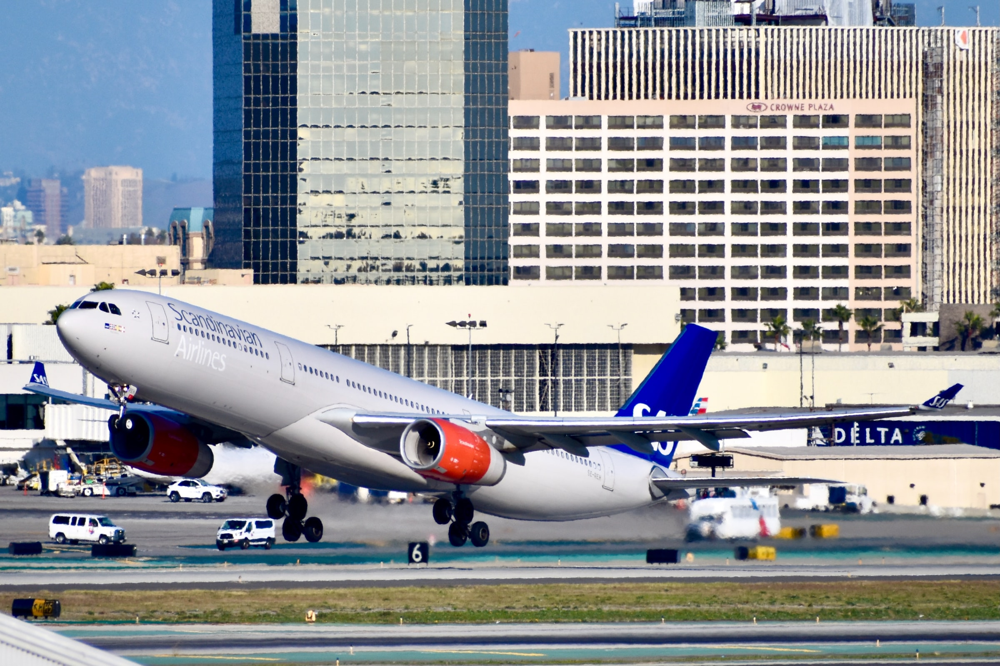

Environmental impacts of the aviation industry
Commercial
27 March 2021
The aviation industry faces much contempt from activists over its environmental impacts. As with all climate issues, the problems and solutions are complex, and often contain many hidden layers and factors.
To begin, we can examine some numbers. The aviation industry accounts for:
- 2.5% of the world's CO2 emissions
- 2% of the world's total greenhouse gas emissions
- 3.5% of global warming effects (effective radiative forcing)
Globally, the transportation industry as a whole accounts for 14% of total greenhouse gas emissions, making aviation a seventh of that. These numbers may seem small in the grand scheme of things, which they are. Consider though, that aviation accounted for 918 million metric tons of CO2 emissions in 2019. Not such a small number anymore!
These numbers certainly don't mean that we shouldn't do anything about the aviation industry's environmental impacts, because they are significant. However, it does mean that we shouldn't be concentrating our anger and hatred of emissions toward the aviation industry, which is a real necessity in our modern world. Instead, we should take action to find solutions for emissions in all sectors.
An aircraft leaving a contrail. These are a result of water vapor that is released during fuel combustion, which then condenses/freezes in the air behind the aircraft. Water vapor is a greenhouse gas, and aircraft contrails can actually exacerbate global warming. Photo by Shubham Shrivastava on Unsplash
Currently, most commercial airline operations use aircraft that run on Jet-A and Jet-A1 fuel, a form of kerosene. Jet-A is a petroleum based fuel, which is of course a fossil fuel. Currently, limited aviation biofuel is available, which is derived from biological products (hence, biofuel). However, these fuels are more expensive than traditional Jet-A, which is a disincentive for airlines that consider using it. Only three airports (Los Angeles, Oslo, Stockholm) are regularly using biofuels, and only a mixture of petroleum-based kerosene and biofuel. The only form of aviation biofuel is made from vegetable oils and animal fats.
An SAS A330 taking off from LAX. LAX is one of three airports in the world using biofuels. Photo by Beckett Pfahler on Unsplash
Using biofuels isn't a perfect solution, though. The main advantage is simply the fact that they are not fossil fuel based. While offering some total carbon benefit, the CO2 emissions are similar to traditional fuel. Additionally, many forms of biofuel are derived from staple crops, such as corn and sugar. Directing these resources towards biofuel can cause food and income insecurity for many people living in developing countries that already struggle.
Because our current aircraft were designed to fly using traditional fuels, alternative energy solutions do not translate well to them. Therefore, long-term sustainability in aviation requires a reimagination of what commercial aviation looks like, with completely new aircraft. As a result, these projects require a vast amount of resources, especially in research and development.
Renderings of Airbus' zero emissions concept aircraft. Image via Airbus.
This means that completely renewable energy-powered aircraft will not be available for a while. Thus, research in these fields should start as soon as possible so we can be prepared for the day when we run out of fossil fuels. For example, Airbus is working on aircraft concepts powered by hydrogen fuel cells, but they likely won't be available until 2035.
It's hard to deny the necessity and convenience commercial aviation provides for our world. No matter how much you try to guilt people out of flying, it won't really do much to reduce aviation's impact on the environment. To ensure that aviation will be available and sustainable as we move away from fossil fuels, it is imperative that we begin investing in environmentally friendly flight now, lest we be caught off guard.
References
- "Airbus reveals new zero-emission concept aircraft". Airbus, 2020. https://www.airbus.com/newsroom/press-releases/en/2020/09/airbus-reveals-new-zeroemission-concept-aircraft.html.
- "Aviation Biofuels". European Technology and Innovation Platform, 2017. https://www.etipbioenergy.eu/images/ETIP_Bioenergy_Factsheet_Aviation_Biofuels.pdf.
- "Global Greenhouse Gas Emissions Data". United States Environmental Protection Agency. https://www.epa.gov/ghgemissions/global-greenhouse-gas-emissions-data.
- Graver, Brandon, Dan Rutherford, and Sola Zheng. "CO2 emissions from commercial aviation: 2013, 2018, and 2019". The International Council on Clean Transportation, 2020. https://theicct.org/publications/co2-emissions-commercial-aviation-2020.
- Le Feuvre, Pharoah. "Are aviation biofuels ready for take off?". International Energy Agency, 2019. https://www.iea.org/commentaries/are-aviation-biofuels-ready-for-take-off.
- Ritchie, Hannah. "Climate change and flying: what share of global CO2 emissions come from aviation?". Our World in Data, 2020. https://ourworldindata.org/co2-emissions-from-aviation.